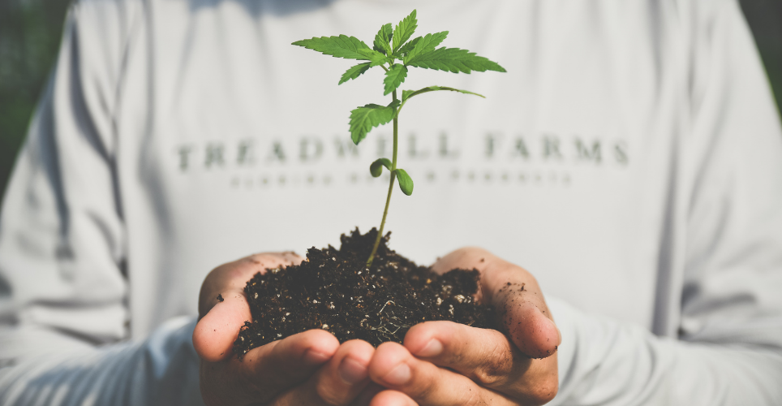
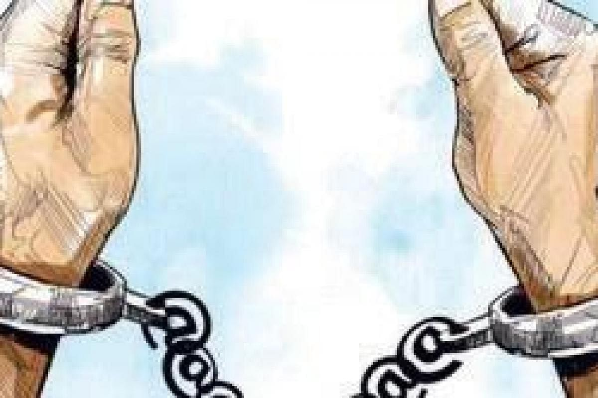
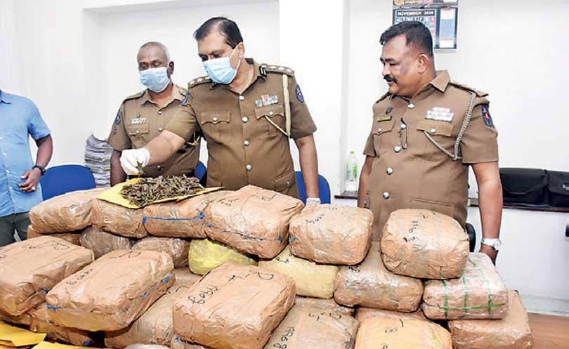
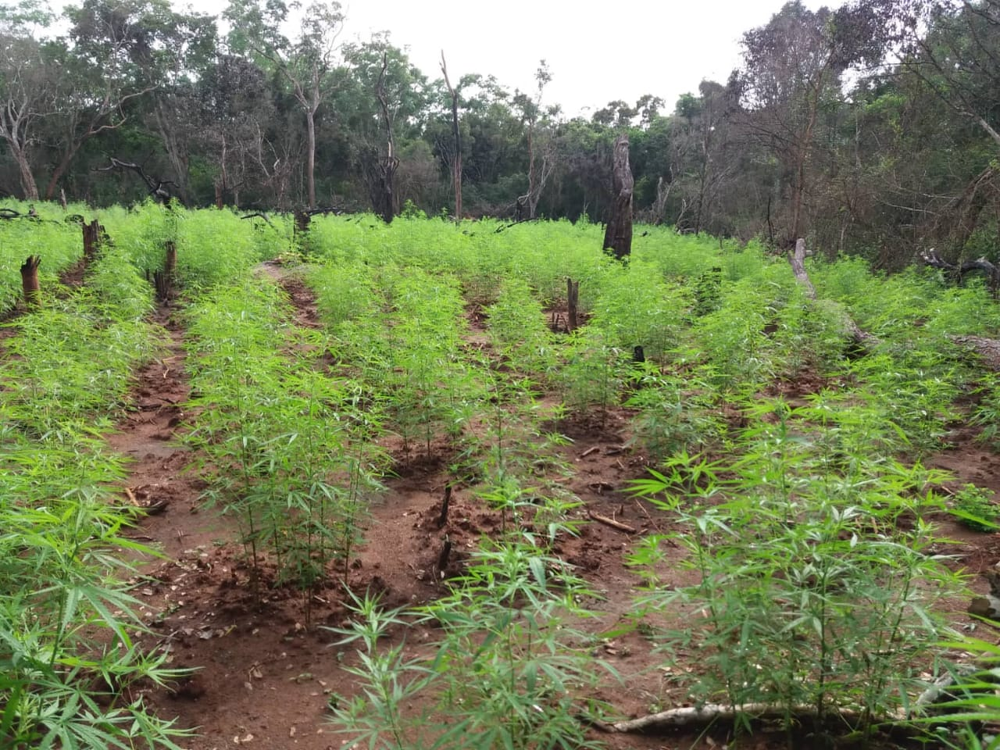
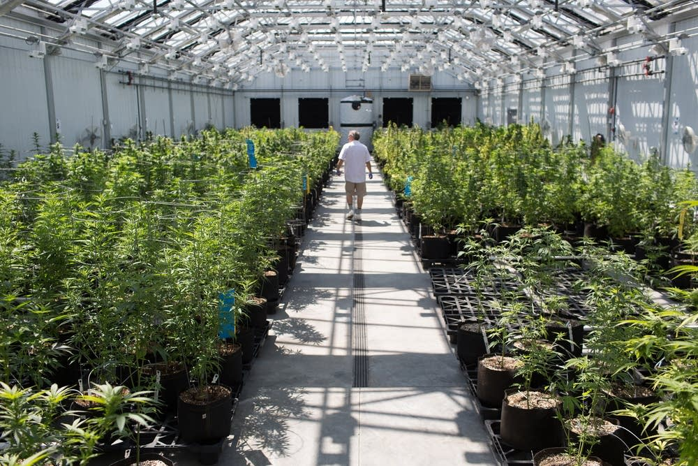
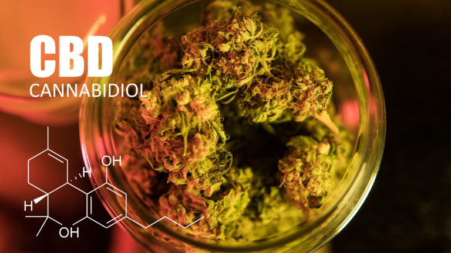
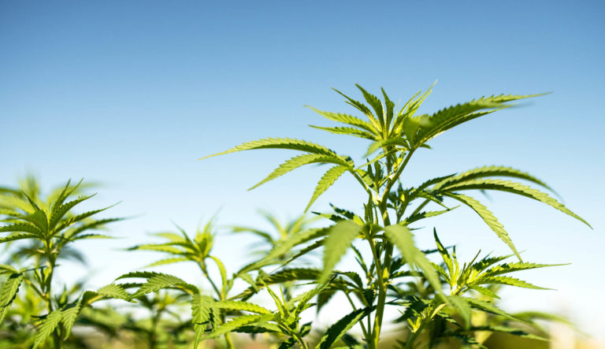
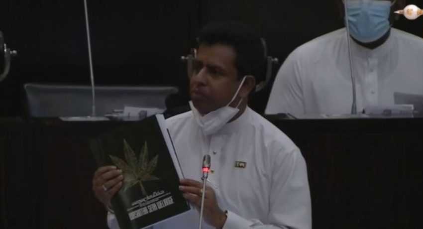
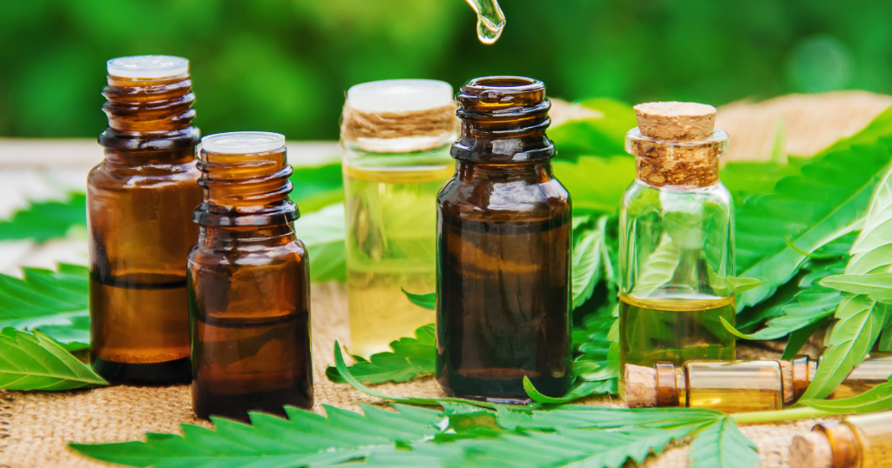

It is illegal to use cannabis recreationally in Sri Lanka. The Poisons, Opium, and Dangerous Drugs Act states that: “No person shall, without the licence of the Minister, sow, plant, cultivate, obtain, or have in his possession any poppy plant, coca plant, or hemp plant, or collect or have in his possession the seeds, pods, leaves, flowers, or any part of any such plant.” Sri Lanka has strict penalties in place for possession of cannabis. If it’s five kilos or less, this is typically regarded as a minor offence, and the punishment is likely to be a fine or a short prison sentence. Possessing larger quantities is considered a more serious offence. In this instance, offenders receive bigger fines and longer prison sentences, at the discretion of the judge.
It is also illegal to sell or supply cannabis in Sri Lanka. The law states that: “No person shall collect, prepare, process, sell or offer for sale, manufacture, store, obtain or have in his possession, distribute or use (a) any resin obtained from the hemp plant for the preparations or extracts from the hemp plant commonly known as bhang, hashish or ganja or any other preparation of which such resin forms apart.” Trafficking is regarded as a serious offence and incurs a fine and a prison sentence. In 2004, the death penalty (which had been abolished in 1976) was reinstated for various crimes – drug trafficking being one of them. However, according to the Poisons, Opium, and Dangerous Drugs Act this only applies to heroin, cocaine and morphine trafficking, and there haven’t been any executions since 2004. Usually, death sentences are reduced automatically to life imprisonment.
 
It is illegal to grow cannabis in Sri Lanka, unless it is for medical purposes (and grown by state-hired farmers). However, even though it’s illegal, cannabis is still cultivated widely across the country, particularly in the eastern and southern provinces.
The Sri Lankan Excise department, in conjunction with the police, run regular eradication campaigns to curtail this cultivation.
Although there are increasing calls to legalise cannabis cultivation in the country (notably on social media), religious leaders strongly protest the idea. At a press conference in 2020, Ven. Dhammalankara Thera (chief prelate of Kotte Sri Kalayani Samagri Dharma Maha Sangha of Siyam Maha Nikaya) commented: “The media should take steps to curb the promotion of cannabis and the issue of cultivation creates a national problem.”


CBD is illegal in Sri Lanka, as it is categorised as part of the ‘hemp plant’ in Sri Lankan law.
Cannabis seeds are illegal in Sri Lanka. As a result, they cannot be sent to the country in the post.
Despite Sri Lanka’s tough stance on cannabis, the government announced in 2017 that it would be legalising cannabis cultivation for medical purposes. The cannabis is exclusively for Ayurvedic practitioners in the country, though some will also be exported to the US for medical use. Rajitha Senaratne, the Minister of Health, Nutrition and Indigenous Medicine, commented that: “Many Ayurvedic doctors have complained that they don’t get good quality cannabis for their preparations. Good cannabis is a vital ingredient in the preparation of traditional medicine.” Prior to this amendment to the law, practitioners were relying on black-market cannabis that had previously been seized by the police. Senaratne added: “By the time our native doctors get this cannabis, it is about four to five years old and it has lost its effectiveness.” The government made plans to dedicate 100 acres to farming cannabis, with the aim of producing over 25 tonnes a year. In 2019, Australian-based Creso Pharma announced plans to expand into Sri Lanka, working with Ceyoka Health, a Sri Lankan pharmaceutical distributor. Both companies anticipate this will lead to further joint ventures in the cannabis market in the future. As of July, 2021, their CBD-based lozenge (“cannAFFORD® 50”), is still waiting to pass the necessary regulatory requirements. It will then be available to purchase on the medicinal market, as a therapeutic product.

Although there are several cannabis plantations in Sri Lanka (particularly in the eastern and southern provinces), the cultivation of industrial hemp is technically illegal.
Sri Lankan officials routinely destroy or seize the harvest from cannabis plantations once they’re discovered, regardless of what purpose the plants are grown for.
The Sri Lankan government takes the shape of a semi-presidential representative democratic republic and is a multi-party system. This means that on issues such as cannabis legalisation, a wide range of political opinions are heard.
Many politicians support the use of cannabis for traditional medicine, which was reflected by the Minister of Health, Nutrition and Indigenous Medicine’s decision to legalise it for Ayurvedic preparations.
If you are travelling to Sri Lanka (or currently live there), you may be interested to know the following:
Like many Asian countries, Sri Lanka has a long, illustrious history of cannabis use and cultivation. In ancient times, it was used in Ayurvedic medicine to stimulate appetite and promote digestion, and numerous other health conditions. King Buddadasa (341AD) even wrote about the medical values of cannabis in his pharmacopeia, Saratha Sangrahaya
It’s believed that the Sri Lankan people traded cannabis and hashish with several other countries throughout the medieval period. From the early 17th century, the island endured times of political turbulence, as various nations invaded and seized control. In 1675, the Dutch colonial rulers banned the trafficking of cannabis entirely.
In the 1900s, the British took control of Sri Lanka. It was in this period that the international trade in cannabis and hashish intensified, as well as that in opium and cocaine. By around 1860, Sri Lanka (or Ceylon, as it was called back then) had several British-run coca plantations. At least some of these were in operation until after World War II.
Sri Lankan attitudes to cannabis are sometimes contradictory. On the one hand, many consider it to be a harmless substance, used for hundreds of years in Ayurvedic preparations. It’s often prized for its medical benefits too. Even government officials have acknowledged its value to society, with the Ministry of Indigenous Medicines legalising small quantities for Ayurvedic practitioners to use.
However, others regard it as an illicit, dangerous drug. This is reflected in its legal status at present.
Most local strains exhibit the classic South Asian ‘sativa’ appearance (now agreed by botanists to be a subtype of C. sativa sp. Indica). It is tall and has many branches, with wide-spaced internodes and narrow, dark green leaves. The plants are usually aromatic and produce floral, peppermint or citrus scents.
The high obtained from most Sri Lankan cannabis is clear and cerebral with little drowsiness.
Ayurvedic medicine has been traditionally used in Sri Lanka for centuries, and is still widely practiced today. Cannabis is an important ingredient of many of the medicines, and the different varieties are given various Sinhalese or Sanskrit names, such as:
These names indicate the specific properties of each, referring to benefits such as inducing a euphoric state or heightening sexual energy.
In the past, registered Ayurvedic practitioners obtained cannabis via the Ayurvedic Drugs Corporation. In turn, the Corporation got their cannabis from the police for free, who often passed on plants that they’d seized from illegal commercial plantations.
At the turn of the 21st century, the future of Ayurvedic medicine hung in the balance. The clash between these traditional practices (and their more relaxed approach) and negative modern attitudes to cannabis meant that the Ayurvedic medicines were at risk of being phased out.
However, announcements from the government in 2017 suggest that this is no longer the case. In 2018, Health Minister Rajitha Senaratne outlined plans to cultivate cannabis on 100 acres of land, to use for domestic Ayurvedic practices and for export to the US.
Madana modaka is a medicinal preparation used in Ayurvedic practice. It is legally sold by the Ayurvedic Corporation and other Ayurvedic practitioners, and contains cannabis leaves and seeds. These are usually fried in ghee, along with other herbs such as coriander, kottan, thipal, asamodagam and namal renu.
Madana modaka is used to treat flatulence and loss of appetite, and is believed to act as a sexual stimulant.
In recent years, Ayurvedic pharmacies supplying madana modaka have experienced problems with the law, with their medicine being seized and destroyed. A notable case was in 2002, when an individual in Udawalawe was arrested for possession of madana modaka. When the Ayurvedic practitioner who had supplied it appealed to the police, he too was arrested. This was despite the fact that he’d made the madana modaka with ingredients obtained from the Ayurvedic Drugs Corporation.
Since then, there have been several other instances like this. There is a perception that the Ayurvedic practitioners are ‘targeting children’ with their products. This led the Sri Lankan president Mahinda Rajapaksa to instruct police to target practitioners suspected of selling madana modaka near schools.
Although the Sri Lankan government recently adopted a softer stance on the use of cannabis for medical purposes, overall, it shows no signs of doing the same for recreational use. As such, it seems unlikely that it will be fully legalised any time soon.
every effort has been made to ensure the accuracy of this article, it is not intended to provide legal advice, as individual situations will differ and should be discussed with an expert and/or lawyer.